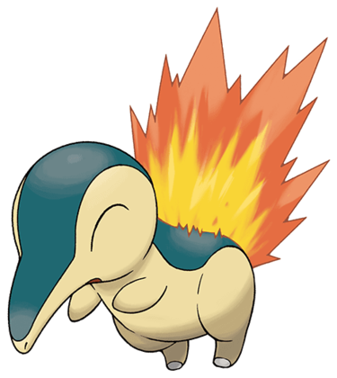
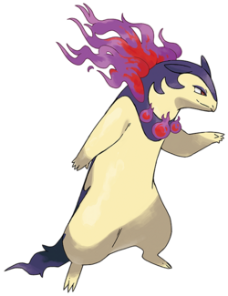

Héricendre - Le pokemon souris feu
Héricendre
Héricendre est un pokemon originaire de la région de Johto, dévoilé lors de la deuxième génération.
Son nom vient de la combinaison de Hérisson et de cendre
| Nom | Héricendre |
|---|---|
| Taille Moyenne | 0,50 m |
| Poid Moyen | 7,90 kg |
| Talents |
Brasier
Torche
|

Si héricendre évoluait en feurisson au niveau 14 depuis la deuxième génération, il n'atteint cette évolution qu'au niveau 17 dans le jeu Légende Arceus. Cependant, peut importe la génération, un feurisson peut évoluer en typhlosion au niveau 36. La différence est alors une forme physique complètement différente.
Les différences notables de cette nouvelle forme par rapport à l'ancienne sont :
Il échange 10 points de statistiques :
Typhlosion

Thyplosion est la forme évoluée de héricendre.
Son nom vient de la fusion de Thyphon et d'explosion
| Nom | Thyplosion |
|---|---|
| Taille Moyenne | 1,70 m |
| Poid Moyen | 79,5 kg |
| Talents |
Brasier
Torche
|